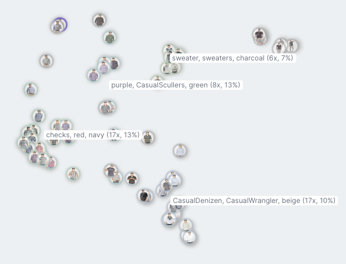
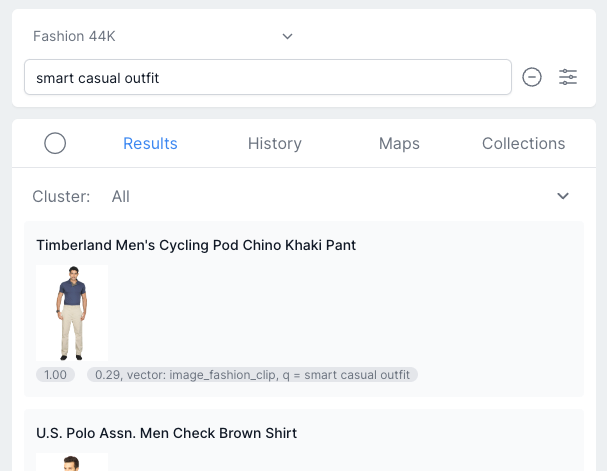

For any large content library
Our technology makes any large content library instantly searchable and
explorable
Utilize long-tail content
Provide your users a better search experience with content clustered by
similarity, leading to more diverse results and higher customer
satisfaction
Attract new CustomersA
unique search experience that lets you stand apart from the competitors and
attracts new customers

Semantic & Hybrid Search
Works with missing metadata
Semantic search shows exactly the content the user wants, regardless of the
quality of the metadata assigned to the content, resulting in cost-reduction
for metadata generation
Much easier than with other tools
Sensible defaults, a graphical user interface and expert-selected pre-trained
models take the hassle out of building a production-ready semantic search
process

Next-level Recommendations
Interactive & visual Create
more engagement and higher conversions by interactive and visual
recommendations instead of a plain list of top-5 similar items
Easy to set up Ready-to-use
UI widgets for recommendation mini-maps showing similar items gets you started
in minutes
User-created Collections
Increase customer loyalty
Let uses create their own collections of items, building up loyalty for your
service
Satisfying experience Users
can provide examples of what they like and dislike, and based on this get
personalized recommendations, similar to Spotify Playlists and Pinterest
Boards